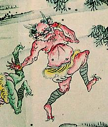

← 图鉴索引

赤い鬼。踊るような仕草で、右脚を上げている。虎柄の腰巻を身につけている。
出典：親書誌：A5_hermitage_0008：放屁合戦図巻；ホウヒカッセンエマキ／日付：2011／資源識別子：A5_hermitage_0008_0005_0000
Copyright (c)2010- International Research Center for Japanese Studies, Kyoto, Japan. All rights reserved.